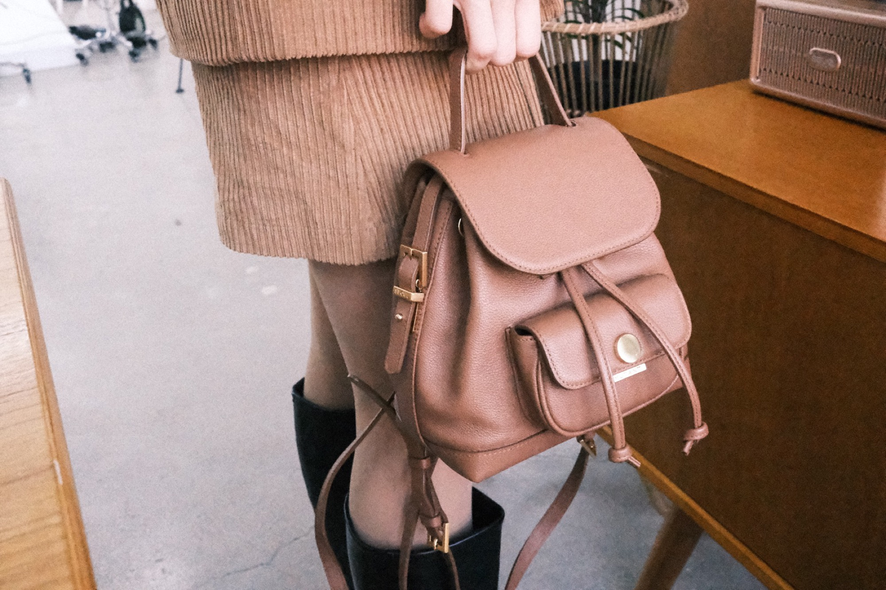
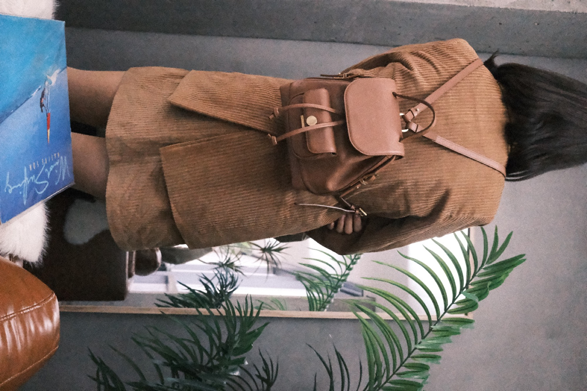

디저트선물세트 · 고급쿠키세트 흐름
백화점쿠키선물, 프리미엄답례품, 고급쿠키세트처럼 조금 더 정제된 선물 인상이 필요하면 이 가이드가 가장 잘 맞아요.
디저트 선물 가이드 보기terminal 샌드쿠키는 제품 자체의 맛 설명보다도, 완성된 선물의 인상과 무드가 먼저 중요한 라인이에요. 감도 있는 답례, 브랜드 선물, 출시 기념 패키지처럼 “센스가 남아야 하는 주문”에 잘 맞습니다.

terminal은 제품명보다 선물의 인상과 무드가 먼저 중요한 라인이라, 디저트 선물세트처럼 선물감이 중요한 흐름에서 먼저 보면 이해가 더 빨라요.
백화점쿠키선물, 프리미엄답례품, 고급쿠키세트처럼 조금 더 정제된 선물 인상이 필요하면 이 가이드가 가장 잘 맞아요.
디저트 선물 가이드 보기용도와 수량, 어떤 무드로 보이고 싶은지부터 정리하면 terminal 상담이 훨씬 빨라져요. 정확한 제품명 없이 문의해도 괜찮아요.
무료견적내러가기기본 답례보다 한 단계 더 인상과 감도를 분명히 남겨야 하는 주문을 위한 흐름이라, 구성과 포장을 같이 보는 상담형 제품으로 이해하면 가장 자연스럽습니다.
terminal 샌드쿠키는 한 번 보고 끝나는 간식보다, 브랜드와 함께 기억에 남는 선물 경험을 만드는 쪽에 더 가깝습니다.
감사 선물, VIP 패키지, 브랜드 협업 선물처럼 기본 답례보다 조금 더 정제된 인상이 필요한 장면에 맞춰집니다.
수량과 행사 목적, 어떤 무드로 보이고 싶은지를 함께 보고 상담형으로 구성하는 편이 가장 자연스럽습니다.
그래서 사진도 맛 설명보다 “이 선물이 어떻게 남는지”를 보여주는 컷으로 보는 편이 더 자연스러워요.


단순히 디저트를 전달하는 흐름보다, 선물의 인상과 브랜드 감도를 같이 보여줘야 하는 주문에 더 잘 맞아요.
무엇을 주는지보다 어떤 분위기로 기억될지가 중요한 장면이라면 terminal 쪽이 더 자연스러워요.
무난한 답례보다 한 단계 더 선물감과 무드를 살리고 싶은 주문에 추천드려요.
제품만 예쁜 것보다 전체 인상이 브랜드 톤과 맞아야 할 때 잘 맞는 라인이에요.
정확한 제품 설명보다 원하는 인상과 장면이 먼저 떠오른다면 terminal 상담 흐름이 훨씬 편해요.
terminal은 고정 상품을 고르는 흐름보다, 목적과 무드를 먼저 공유하고 방향을 맞추는 상담형 흐름이 더 자연스러워요.
terminal 샌드쿠키는 백화점쿠키선물, 백화점쿠키선물세트, 고급쿠키세트, 프리미엄답례품, 특별한답례품처럼 브랜드 무드와 선물감이 중요한 검색 흐름에서 특히 잘 어울리는 스페셜 라인이에요.
백화점쿠키선물, 백화점쿠키선물세트, 고급쿠키세트처럼 조금 더 선물감과 완성도가 살아 있는 디저트를 찾는 경우에 terminal이 잘 맞아요.
프리미엄답례품, 특별한답례품, 디저트선물추천처럼 흔한 답례보다 더 선명한 인상을 남기고 싶은 주문에 특히 잘 어울려요.
구성의 고정 여부, 브라우니 커스텀과의 차이, 제품 대신 무드만 설명해도 되는지처럼 상담 전에 가장 많이 묻는 내용부터 정리해두었어요.
terminal은 제품보다 인상이 먼저 중요한 라인이라, 정확한 제품명보다 어떤 분위기로 보이고 싶은지부터 알려주셔도 괜찮아요. 수량과 일정까지 같이 보내주시면 더 빠르게 방향을 안내해드릴게요.
브랜드 선물 · 스페셜 답례 · 출시 기념 패키지 · 감도 있는 선물 상담 가능무드만 먼저 설명해주셔도 terminal에 맞는 흐름부터 같이 정리해드릴게요.